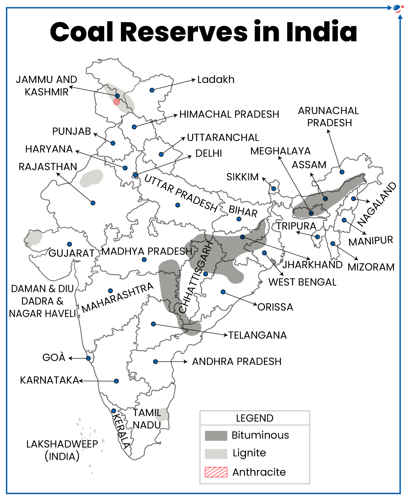
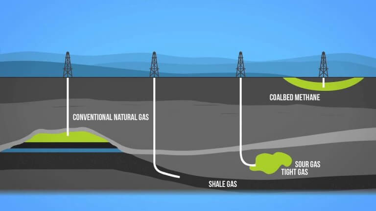
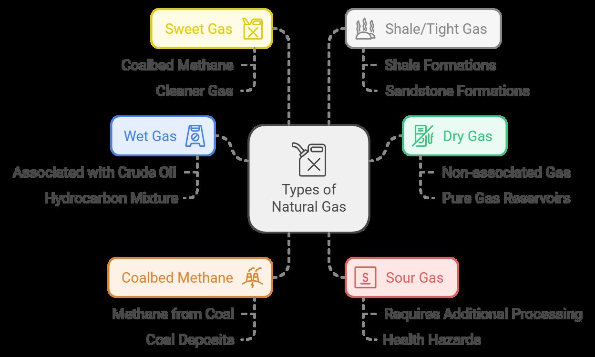

Mineral Resources In India — Coal, Petroleum And Natural Gas
Coal: A Vital Energy Resource in India
- 1. Introduction
Coal is often called “black gold” and forms the backbone of India's energy
infrastructure, as it is the most abundant fossil fuel in the country.
It is primarily used for power generation and is crucial for industrial sectors
●
like iron and steel manufacturing. In India, coal provides nearly 70% of the
total electricity production.
- 2. Type of Resource
Fossil Fuel / Conventional Energy Source
●
Originates from decomposed plant material under layers of soil over millions of
years.
Major types are based on carbon content and include peat, lignite, bituminous,
●
and anthracite .
- 3. Formation Process
Formed through the carbonization of plant material over millions of years .
●
Over time, the proportion of carbon increases as oxygen and nitrogen
●
decrease due to heat and pressure .
Coalification stages :
●
Peat : Initial accumulation of plant debris.
○
Lignite : Low-grade Brown coal with moderate carbon content.
○
Bituminous : Soft coal, widely used with 40-80% carbon.
○
Anthracite : Hard coal with the highest carbon content (80-95%), provides
high energy.
- 4. Types and Classifications
Peat : Contains <40% carbon, has low energy output and produces more smoke.
●
Lignite (Brown Coal) : 40-55% carbon, high moisture, used in electricity
●
generation (notably in Neyveli, Tamil Nadu ).
Bituminous Coal : Contains 45-86% carbon, high calorific value, most widely
●
used for coke and gas production .
Anthracite : 86-97% carbon, found in Jammu & Kashmir , high calorific value and
efficiency.

- 5. Distribution in India
Gondwana Coal Fields (about 200 million years old) and Tertiary Coal Fields
(around 55 million years old).
Major Coal Reserves :
●
Damodar Valley (Jharkhand–West Bengal): Contains the Raniganj ,
○
Jharia , Bokaro , Giridih , and Karanpura coalfields.
Mahanadi Valley (Chhattisgarh): Known for Korba coalfield .
○
Godavari Valley (Telangana): Home to Singareni and other deposits.
○
Lignite Deposits : Found in Tamil Nadu , Puducherry , Gujarat , and Jammu &
●
Kashmir .
Key Coal Mining Centers :
●
Jharkhand : Jharia, Bokaro
○
Chhattisgarh : Korba, Rampur
○
Odisha : Talcher
○
Maharashtra : Chanda–Wardha
○
Telangana : Singareni
○
Tertiary Coal Fields :
●
Northeastern States : Assam, Meghalaya, Nagaland, and Arunachal
Pradesh.
- 6. Uses and Applications
Power Generation : Nearly 70% of India’s electricity comes from coal-fired
thermal power plants.
Iron and Steel Industry : Used as coking coal in iron smelting processes.
●
Domestic and Industrial Use : In households and smaller industries for heating
●
and fuel .
By-products : Coal tar, coal gas, and coke, used in various chemical and
●
industrial applications .
- 7. Environmental Impact and Challenges
High Ash Content : Indian coal has high ash content, which leads to air pollution
and health issues.
Air and Water Pollution : Coal combustion releases CO₂, SO₂, and NOx ,
●
contributing to climate change and acid rain .
Deforestation and Land Degradation : Mining disrupts ecosystems and leads to
●
soil erosion .
Water Stress : Coal mining consumes significant water resources, impacting
availability in surrounding areas.
Rat Hole Mining : A hazardous and environmentally damaging mining method in
Meghalaya.
- 8. Economic Importance
Employment : Major employer in mining regions, providing jobs for thousands.
●
Revenue Generation : Contributes significantly to India's GDP through taxes
and royalties.
Energy Security : Coal is India's primary energy source, reducing dependency on
imported energy.
- 9. Recent Developments and Government Initiatives
Commercial Coal Mining : In 2020, India allowed private firms to enter the coal
sector, aiming to increase production and reduce imports.
Coal Block Auctions : Auctions held to allocate mining blocks for private and
public sectors to increase efficiency.
Clean Coal Technologies : Emphasis on coal gasification and carbon capture
●
and storage (CCS) to reduce environmental impact.
Increased Lignite Use : Tamil Nadu’s Neyveli Lignite Corporation focuses on
expanding lignite mining for regional power needs.
- 10. Conclusion
Coal remains a critical energy resource for India’s growth, especially in power
●
generation and industry .
Moving forward, environmental sustainability and clean coal technologies will
be essential to mitigate coal’s environmental impact while meeting energy needs.
Petroleum: Liquid Gold and Key Energy Source in India
- 1. Introduction
Petroleum , often referred to as “liquid gold” , is a crucial fossil fuel primarily
●
used for transportation, power generation , and industrial applications .
Formed from marine organisms buried under sedimentary rock layers over
millions of years, petroleum is indispensable to India’s energy security.
- 2. Type of Resource
Fossil Fuel / Conventional Energy Source
●
Found in sedimentary basins and offshore reserves .
●
Includes crude oil , natural gas , and by-products processed in petrochemical
●
industries .
- 3. Formation Process
Derived from organic materials like plankton and algae that settled in ancient
seas.
Heat and pressure over millions of years convert this material into
hydrocarbons.
Oil traps in sedimentary rock layers hold petroleum, which accumulates in
●
anticlines, fault traps , and salt domes .
- 4. Types and Classifications
Crude Oil : Unrefined oil containing a mixture of hydrocarbons.
●
Associated Gas : Natural gas found with crude oil in reservoirs.
●
Non-Associated Gas : Natural gas found in separate reservoirs from oil.
●
Sweet Crude : Low in sulfur, easier to refine.
●
Sour Crude : High in sulfur, requires additional refining.
●
- 5. Distribution in India
Key Petroleum Regions :
●
Mumbai High (Maharashtra): Offshore field, 160 km off the coast,
discovered in 1973, accounting for major production.
Gujarat : Major oilfields at Ankleshwar , Kalol , Mehsana , Nawagam , and
○
Kosamba .
Assam : The oldest oil-producing region, with key fields at Digboi ,
○
Naharkatiya , and Moran .
Krishna-Godavari Basin (Andhra Pradesh and Tamil Nadu): Important
discoveries in offshore reserves on the east coast.
Other Significant Reserves :
●
Cauvery Basin (Tamil Nadu)
○
Rajasthan : Notable onshore reserves in the Barmer Basin .
○
Strategic Petroleum Reserve :
●
Facilities in Visakhapatnam (Andhra Pradesh) , Mangalore , and Padur
○
(Karnataka) provide emergency reserves.
- 6. Petroleum Refining in India
First Refinery : Established in 1901 at Digboi, Assam , marking the beginning of
India’s petroleum refining.
Expansion : An additional refinery started in 1954 at Tarapur, Mumbai .
●
Current Refining Hub : India now operates as a refining hub , with refining
●
capacity exceeding domestic demand, enabling exports of refined petroleum
products .
Transportation of Crude Oil : Pipelines are used to transport crude oil from
wells to the nearest refineries.
- 7. Advantages of Pipelines
Efficient for Liquids and Gases : Ideal for transporting petroleum, natural gas,
and other liquids.
Challenging Terrains : Can be laid across difficult terrains and underwater ,
enhancing connectivity.
Low Maintenance : Requires minimal maintenance compared to other
transportation methods.
Safe and Environmentally Friendly : Offers accident-free, environmentally
sustainable transportation.
- 8. Disadvantages of Pipelines
Limited Flexibility : Pipelines connect only fixed points, reducing adaptability.
●
Capacity Constraints : Once laid, the capacity of a pipeline cannot easily be
increased.
Security Concerns : Hard to ensure security over long distances.
●
Leak Detection and Repair : Difficulties in leak detection and repairs due to
pipeline structure.
- 9. Major Crude Oil Pipelines in India
Salaya-Mathura Pipeline (SMPL)
●
Paradip-Haldia-Barauni Pipeline (PHBPL)
●
Mundra-Panipat Pipeline (MPPL)
●
- 10. Key Petroleum Product Pipelines
Guwahati-Siliguri Pipeline (GSPL)
●
Koyali-Ahmedabad Pipeline (KAPL)
●
Barauni-Kanpur Pipeline (BKPL)
●
Panipat-Delhi Pipeline (PDPL)
●
Panipat-Rewari Pipeline (PRPL)
●
Chennai–Trichy–Madurai Product Pipeline (CTMPL)
●
Chennai-Bangalore Pipeline
●
- 11. Additional Significant Pipelines
Naharkatia-Nunmati-Barauni Pipeline : India’s first pipeline .
●
Mumbai High-Mumbai-Ankleshwar-Koyali Pipeline
●
Hajira-Bijapur-Jagdishpur (HBJ) Gas Pipeline
●
Jamnagar-Loni LPG Pipeline
●
Kochi-Mangalore-Bangalore Pipeline
●
Visakhapatnam-Secunderabad Pipeline
●
Mangalore-Chennai Pipeline
●
Vijayawada-Visakhapatnam Pipeline
●
- 12. Uses and Applications
Transportation Fuel : Fuels cars, trucks, aircraft, and ships with gasoline,
diesel, and aviation fuel.
Power Generation : Used in diesel-based power plants and as an emergency
fuel source.
Petrochemical Industry : Source for fertilizers, synthetic rubber, synthetic
●
fibers, plastics, and medicines .
Industrial Applications : Used in lubricants, waxes, and cosmetics .
●
- 13. Environmental Impact and Challenges
Greenhouse Gas Emissions : Petroleum combustion releases CO₂ , a key
●
contributor to global warming .
Oil Spills and Water Pollution : Leaks in drilling and transportation cause
●
significant marine pollution .
Deforestation and Habitat Loss : Exploration activities impact local ecosystems.
●
Air Pollution : Emissions include SO₂, NOx, and particulate matter, affecting air
quality and human health.
- 14. Economic Importance
Energy Security : Ensures India’s fuel independence and is a key component of
●
strategic reserves .
Revenue Generation : Contributes significantly to the economy through excise
●
duty , royalties , and exports .
Employment : Provides jobs in drilling, refining, transportation , and
●
petrochemical industries .
Foreign Exchange : Imports of petroleum products have a major impact on
India’s balance of payments.
- 15. Recent Developments and Government Initiatives
New Discoveries : Exploration in Krishna-Godavari Basin , Rajasthan’s Barmer
●
Basin , and Cauvery Basin .
Strategic Petroleum Reserves (SPR) : Expansion planned for Chandikhole
●
(Odisha) and Bikaner (Rajasthan) .
Enhanced Oil Recovery (EOR) Techniques : Government emphasis on advanced
●
methods like carbon dioxide injection to boost output.
Energy Transition Initiatives : Diversifying from oil to renewable sources and
●
natural gas to meet environmental targets.
Natural Gas: India’s Strategic and Environmental Fuel

- 1. Introduction
Natural gas is a fossil fuel primarily composed of methane , formed from the
decomposed organic matter of plants and animals under immense heat and
pressure over millions of years. It is found deep underground, often near coal
and crude oil beds .
Importance : Natural gas is vital for power generation , domestic use , and
●
fuel , primarily composed of methane , extracted from deep earth reservoirs near
coal and crude oil beds.
Gas Authority of India Limited (GAIL)
●
Foundation : Established in 1984 .
●
Role : India’s largest natural gas company and one of the seven
●
Maharatna Public Sector Undertakings (PSUs) .
Ministry : Operates under the Ministry of Petroleum and Natural Gas .
●
- 2. Type of Energy Source
Classification : Natural gas is a non-renewable fossil fuel .
●
Formation : Created over millions of years from decomposed organic matter
●
subjected to high pressure and heat deep within the earth.
By-products : During processing, it yields propane, ethane, butane, carbon
●
dioxide, and nitrogen .
- 3. Types of Natural Gas

- 4. Major Producing Regions in India
West Coast : Mumbai High and surrounding areas in Gujarat and Maharashtra.
●
East Coast : New reserves in Krishna-Godavari Basin and Cauvery Basin .
●
Other Notable Regions : Assam Shelf, Tripura, and Barmer Basin in Rajasthan.
●
- 5. Uses of Natural Gas
Power Generation : Fuels about 15% of India’s electricity needs (as of 2023).
●
Industrial Use : Powers boilers, and heating systems, and serves as raw material
●
in fertilizer and chemical industries .
Transportation : Used as Compressed Natural Gas (CNG) for vehicles.
●
Domestic Use : Piped Natural Gas (PNG) for cooking and heating in homes.
●
- 6. Benefits of Natural Gas as Fuel
Cleaner Fuel : Emits fewer pollutants and greenhouse gases compared to coal
and oil.
Efficient : High energy conversion efficiency for maximum utilization.
●
Versatile : Used across multiple sectors like cooking, electricity generation, and
●
transportation .
Flexible : Can be transported and stored in liquefied (LNG) or compressed (CNG)
forms.
- 8. Storage of Natural Gas
Underground Storage : Utilizes depleted gas fields and salt caverns for
large-scale storage.
Above-Ground Storage : Designed for smaller-scale reserves.
●
Advantages of Underground Storage :
●
Capacity : Supports extensive storage.
○
Energy Efficiency : Maintains gas in a condensed state , minimizing
energy losses.
Cost-Effective : Low maintenance costs.
○
Safety : Reduces leakage risk and ensures environmental protection.
○
Grid Reliability : Helps balance supply during peak demand .
○
- 9. Forms of Natural Gas for Distribution and Use
Liquefied Natural Gas (LNG) : Cooled to -160°C for large-volume transport in
cryogenic tanks.
Regasified Liquefied Natural Gas (RLNG) : LNG is converted back to gas form
before distribution.
Compressed Natural Gas (CNG) : Natural gas compressed to 200-250 kg/cm²,
●
used mainly in vehicles .
Piped Natural Gas (PNG) : Distributed through pipelines, ideal for domestic
●